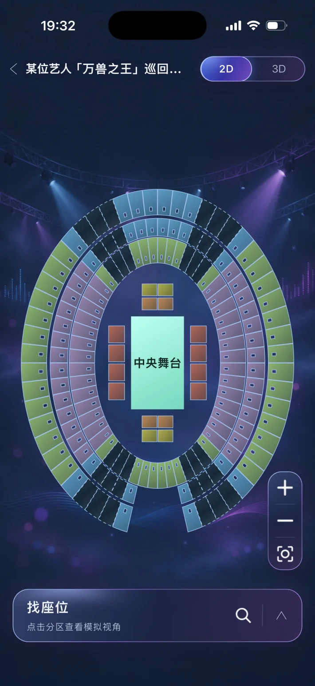
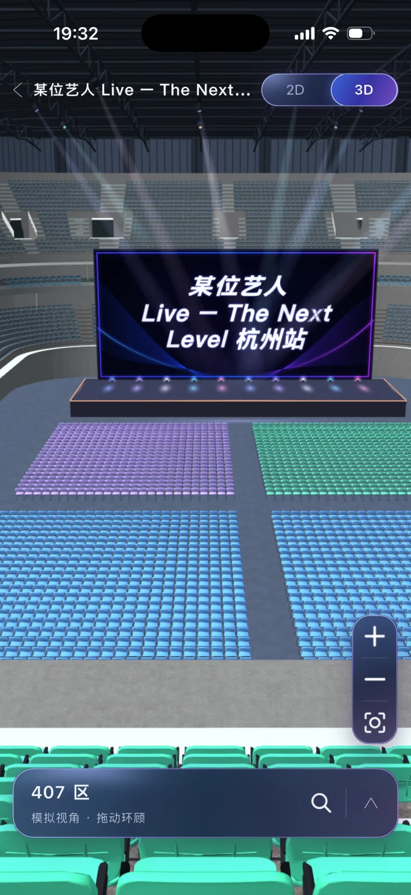
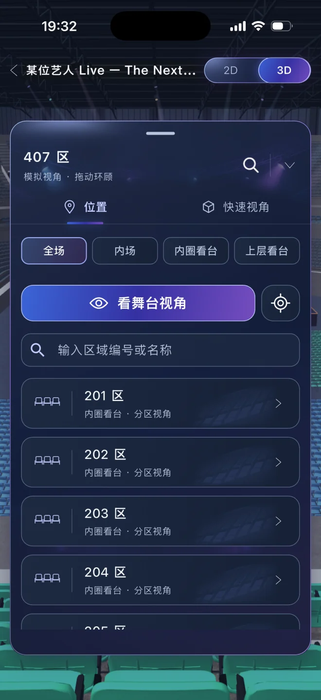
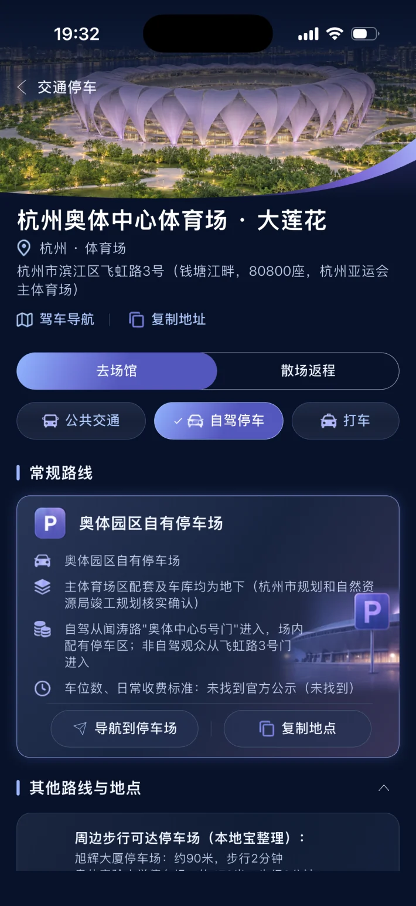

先认清舞台在哪一边
打开对应场次的二维座位图，一眼分清舞台、内场和看台。缩放图面或按楼层筛选，就能找到票面对应的区域。


按城市逛场馆，也可以搜索场馆、艺人或演出。打开对应场次，顺着票面上的分区、排号和座号找位置。
打开对应场次的二维座位图，一眼分清舞台、内场和看台。缩放图面或按楼层筛选，就能找到票面对应的区域。
支持 3D 的场次可以切到分区或座位视角。拖动看看周围的看台，缩放看看舞台的方向和远近。
三维画面为模拟预览，实际视野以现场为准。

输入分区编号或名称，直接找对应区域。已录入排座资料的区域，还能继续选择排号和座号。
去哪个入口附近下车、车停哪里、散场怎么回？在场馆交通页查看地址、公共交通、自驾停车和打车信息，需要时打开地图应用查询。
交通安排可能随场次调整，出发前请核对场馆公告。

可查范围取决于对应场次的座位图。录入了排座资料的区域可以查到排号和座号，其他区域可查看分区位置。请以票面和主办方公布的座位图为准。
3D 预览用来参考舞台的大致方向和距离。临时布景、设备、护栏和观众都可能影响实际视野。
App 收录的座位图和交通资料支持离线查看。打开外部地图查询实时路线时，可能需要联网。